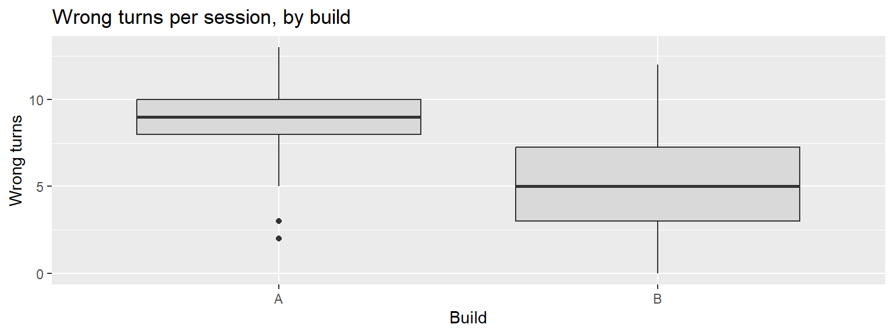
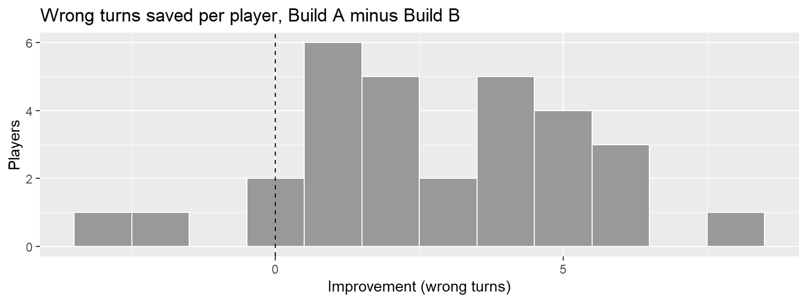
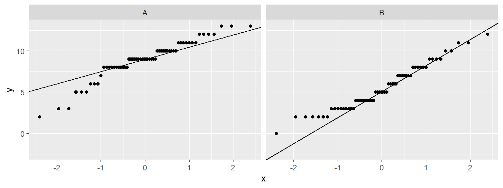

ggplot(sessions, aes(x = build, y = wrong_turns)) +
geom_boxplot(fill = "grey85") +
labs(title = "Wrong turns per session, by build", x = "Build", y = "Wrong turns")
Is the difference real, and does it matter?
Week 2, second cycle, for everyone, before Part B of Lab 02. It takes the question every A/B playtest ends with, “is Build B better?”, and splits it into the two questions it actually contains: would the difference hold up with other players, and is it big enough to act on? The worked example is the one to remember: two results that are both statistically significant, one of which you should act on and one of which you should not.
By the end of these notes you can:
Every build comparison ends with a difference. Build B’s players took fewer wrong turns, or scored more, or quit less. The difference is always there, because two groups of people never produce identical numbers. The question is never “is there a difference?” but “is this difference telling me something about the build, or only about the players who happened to turn up?”
A playtest is a sample. The 30 people who played Tidebreak stand in for everyone who will play it after launch. Run the test again next week with different players and every number would move. Before you rebuild a level on the strength of a difference, you need to know whether that difference would survive a second playtest.
And a real difference can still be worthless. With enough data, a change too small for any player to notice becomes statistically detectable. A result can be certain and irrelevant at the same time. Deciding whether it matters is a design judgement, and no test makes it for you.
Comparing two conditions always follows the same six steps, in this order:
visualise → describe → estimate difference → confidence interval → statistical test → interpret
| Step | Question | Tool |
|---|---|---|
| Visualise | What do the two distributions look like? | Side-by-side boxplots or faceted histograms |
| Describe | Where is each centre, how wide is each spread? | Medians, means, IQRs, standard deviations |
| Estimate difference | How far apart are the groups in this sample? | Difference in means |
| Confidence interval | How far apart could they plausibly be, for players in general? | t.test() |
| Statistical test | Could a gap this size be chance alone? | t.test() |
| Interpret | Is it real, is it big enough, and what do we do? | Judgement |
The test comes fifth, not first. A p-value with no picture and no size attached cannot be interpreted. If the boxplots show a gap nobody would care about, no p-value changes that (rule 7).
Sampling variability is the fact that a different sample gives different numbers, even when nothing about the game has changed. Some of the difference between two groups is the build. Some of it is which players ended up in which group: a few more veterans in one, a bad night’s sleep in the other.
To see it, pretend the Tidebreak team could only afford 15 sessions per build, and draw six such playtests at random from the sessions they actually have. The difference in mean wrong turns comes out as 3.9, 4.5, 2.4, 3.0, 4.9, 2.6. Same builds, same kind of player, six different answers.
Smaller samples swing further. The fewer players you test, the more one unusual player moves the result (rule 8). The statistics in the rest of these notes exist to put a size on that swing.
The observed difference is the gap between the groups in your sample: Build A’s mean minus Build B’s. It is your best single guess at the true difference, and it is almost certainly not exactly right.
A confidence interval is a range of plausible values for the true difference, given the sample. A 95% confidence interval is built by a method that captures the true value in 95% of the playtests you could have run.
Read the interval as a range of sizes. “Build B’s players took 2.5 to 4.3 fewer wrong turns” tells a designer both that the effect is real and how big it might be. An interval that runs from almost nothing to something large says the direction is clear and the size is not.
Width is information. A narrow interval means the sample pins the difference down. A wide one means more players are needed before the size can be trusted. More players, or less variation between them, narrows it.
If the interval includes zero, “no difference” is still plausible. That is the link between confidence intervals and the test that follows.
A hypothesis test asks one narrow question: if the builds really made no difference, how surprising would this data be?
The null hypothesis is the claim of no difference: Build A and Build B produce the same mean number of wrong turns. The alternative hypothesis is that they do not. The test looks for evidence against the null.
The p-value is the probability of seeing a difference at least as large as the one observed, if the null hypothesis were true. A small p-value means the data would be surprising in a world where the builds did not differ.
A p-value is not the probability that the null hypothesis is true.
It is calculated by assuming the null is true, so it cannot also measure how likely the null is. p = 0.03 does not mean “a 3% chance the builds are the same”. It means “if the builds were the same, a gap this large would turn up about 3% of the time”.
Statistical significance means the p-value fell below a threshold chosen before looking, conventionally 0.05. It means “unlikely to be chance alone” and nothing more. Choose the threshold in advance for the same reason you decide what would change your mind before looking at the data (rule 1).
Not significant does not mean no difference. A large p-value means this sample could not rule out chance. That can be because there is no difference, or because there were too few players to see one. The confidence interval tells you which.
Practical significance is whether a difference is large enough to change a design decision. Statistical significance cannot tell you this, because it depends on how much data you have as well as on how big the difference is.
The Tidebreak frame-time capture has 3000 frames from the Atrium zone. In the Atrium, Build B’s frames are 0.42 ms faster than Build A’s, p < 0.001. That is about as statistically significant as a result gets, and a player would need to perceive a difference of less than half a millisecond per frame to notice it. Nobody should schedule work around it.
| Practically small | Practically large | |
|---|---|---|
| Statistically significant | Real but not worth acting on | Act on it |
| Not significant | Nothing to see, if the interval is narrow | Test more players: the sample was too small to tell |
Always report the size of the difference. “Significant” alone hides which row of that table you are in.
How the playtest was run decides which test you use.
Independent samples. Different players test each build. That is how the Tidebreak sessions file was collected: 30 players, each of whom played only one build. The comparison is between two separate groups of people, so differences between the people are mixed in with differences between the builds. Use the independent-samples t-test:
t.test(wrong_turns ~ build, data = sessions)Paired. The same players test both builds. tidebreak_paired.csv records a second study in which 30 players each played both builds. Each player is compared with themselves, so their skill cancels out. Use the paired t-test:
t.test(paired$wrong_turns_a, paired$wrong_turns_b, paired = TRUE)Player ability is the biggest source of variation in most playtests. A confident player takes few wrong turns in any build; a lost one takes many in any build. In the paired data, a player’s wrong turns in Build A and in Build B have a correlation of 0.67: the same people do well or badly in both. The paired design removes that variation, which is why it can detect a difference with far fewer players.
Paired designs bring their own problems. A player who plays both builds plays the second one with more experience (learning effects), in a fixed position (order effects) and more tired (fatigue effects). If everyone plays Build A first, some of Build B’s improvement is just practice. The fix is to give half the players Build A first and half Build B first. tidebreak_paired.csv does not record which build each player played first, so this study cannot rule it out.
A t-test is reliable when these hold closely enough. None needs a formal test; each needs a look.
| Assumption | What it means | How to check | Tidebreak |
|---|---|---|---|
| Independence | One observation does not influence another | Think about how the data was collected | Each player contributed 4 sessions, so the 120 sessions are really 30 players |
| No strong outliers | No few values dominate the means | Boxplots | 3 flagged wrong-turn counts across 120 sessions |
| Approximate normality | Each group roughly bell-shaped | A Q-Q plot | Close enough; counts are whole numbers, which shows as steps |
| Appropriate design | Independent test for separate groups, paired test for the same people | How the playtest was run | Sessions: independent. Paired file: paired |
With a few dozen players per group, the normality assumption matters least. The t-test tolerates moderate departures. Strong outliers and a mismatched design matter far more, and no amount of data fixes the wrong design.
The independence problem has a simple check. Average each player’s four sessions into one value, then compare players rather than sessions. If the conclusion survives, the repeated sessions were not driving it. The R Demonstrations below do exactly that.
Did the signposting reduce wrong turns? The six steps, in order.
Visualise.
ggplot(sessions, aes(x = build, y = wrong_turns)) +
geom_boxplot(fill = "grey85") +
labs(title = "Wrong turns per session, by build", x = "Build", y = "Wrong turns")
Build B’s box sits lower and is taller. The boxplot flags 3 outlying sessions in Build A and 0 in Build B, too few to dominate either mean.
Describe. Build A’s median is 9 wrong turns and Build B’s is 5. Build B’s spread is wider: an IQR of 4.25 against 2.
Estimate the difference. Build A’s players averaged 8.9 wrong turns and Build B’s 5.5: a difference of 3.4.
Confidence interval. The 95% interval for the difference runs from 2.5 to 4.3 wrong turns. It is nowhere near zero.
Test. p < 0.001. If the builds made no difference, a gap this size would almost never occur.
Interpret. The signposting reduced wrong turns, and the smallest plausible reduction, 2.5 per session, is still large enough for a player to feel. This is a result to act on: keep the signposting.
Was Build B harder? The same six steps on the 1–7 difficulty rating give a second significant result. Build B was rated 0.42 points harder, p = 0.032, with a confidence interval from 0.04 to 0.8 points.
Three things say not to act on it. The size is small: under half a point on a seven-point scale. The interval’s lower end, 0.04, is a difference no player would report. And the play data does not back it up: deaths did not differ between the builds (p = 0.679). Statistically significant, practically marginal, and unsupported by what players actually did. Note it, and check it in the next playtest.
library(readr)
library(ggplot2)
sessions <- read_csv("data/tidebreak_sessions.csv", show_col_types = FALSE)
paired <- read_csv("data/tidebreak_paired.csv", show_col_types = FALSE)tapply(sessions$wrong_turns, sessions$build, mean) A B
8.916667 5.516667 tapply(sessions$wrong_turns, sessions$build, sd) A B
2.374238 2.702740 Describe before testing. These are the numbers the test will compare.
result <- t.test(wrong_turns ~ build, data = sessions)
result
Welch Two Sample t-test
data: wrong_turns by build
t = 7.3208, df = 116.07, p-value = 3.492e-11
alternative hypothesis: true difference in means between group A and group B is not equal to 0
95 percent confidence interval:
2.480141 4.319859
sample estimates:
mean in group A mean in group B
8.916667 5.516667 t.test(y ~ group) is the independent-samples t-test. R runs the Welch version by default, which does not assume the two builds have the same spread, and that is the right default. Read three lines of the output: the sample estimates (the two means), the 95 percent confidence interval (for Build A minus Build B) and the p-value.
result$estimatemean in group A mean in group B
8.916667 5.516667 result$conf.int[1] 2.480141 4.319859
attr(,"conf.level")
[1] 0.95result$p.value[1] 3.491687e-11$ pulls single parts out of the result, which is how you get numbers into a sentence with inline R instead of copying them by hand.
t.test(paired$wrong_turns_a, paired$wrong_turns_b, paired = TRUE)
Paired t-test
data: paired$wrong_turns_a and paired$wrong_turns_b
t = 6.0932, df = 29, p-value = 1.234e-06
alternative hypothesis: true mean difference is not equal to 0
95 percent confidence interval:
1.838014 3.695319
sample estimates:
mean difference
2.766667 paired = TRUE compares each player’s two values. The estimate is the mean difference: on average, a player took 2.8 fewer wrong turns in Build B than in Build A.
t.test(paired$wrong_turns_a, paired$wrong_turns_b)
Welch Two Sample t-test
data: paired$wrong_turns_a and paired$wrong_turns_b
t = 3.4918, df = 57.85, p-value = 0.0009258
alternative hypothesis: true difference in means is not equal to 0
95 percent confidence interval:
1.180570 4.352763
sample estimates:
mean of x mean of y
9.366667 6.600000 The same data tested as if the players were different people. The estimate is the same, but the interval is 3.2 wrong turns wide against 1.9 for the paired test. Ignoring the pairing throws away what the design bought you.
paired$improvement <- paired$wrong_turns_a - paired$wrong_turns_b
ggplot(paired, aes(x = improvement)) +
geom_histogram(binwidth = 1, fill = "grey60", colour = "white") +
geom_vline(xintercept = 0, linetype = "dashed") +
labs(title = "Wrong turns saved per player, Build A minus Build B",
x = "Improvement (wrong turns)", y = "Players")
For paired data, draw the differences. 26 of 30 players took fewer wrong turns in Build B, 2 took the same number and 2 took more. geom_vline() marks zero, the line between better and worse.
ggplot(sessions, aes(sample = wrong_turns)) +
stat_qq() +
stat_qq_line() +
facet_wrap(~ build)
A Q-Q plot places each value against where it would sit if the data were perfectly normal. Points close to the line mean close to normal. Here both builds follow it through the middle, in horizontal steps because wrong turns are whole numbers. Build A’s lowest few points drop away below the line: those are the 3 sessions its boxplot flagged, players who barely got lost at all. A handful of points bending off at one end is close enough for a t-test with 60 sessions per build. A whole curve bending away from the line would not be.
per_player <- aggregate(wrong_turns ~ player_id + build,
data = sessions, FUN = mean)
nrow(per_player)[1] 30t.test(wrong_turns ~ build, data = per_player)
Welch Two Sample t-test
data: wrong_turns by build
t = 6.7116, df = 27.324, p-value = 3.125e-07
alternative hypothesis: true difference in means between group A and group B is not equal to 0
95 percent confidence interval:
2.361153 4.438847
sample estimates:
mean in group A mean in group B
8.916667 5.516667 The independence check. aggregate() averages each player’s sessions into one row, leaving 30 players instead of 120 sessions. The difference is the same and the interval is a little wider, from 2.4 to 4.4, because there are fewer independent observations. The conclusion survives.
What the data shows. In this playtest, Build B’s players averaged 3.4 fewer wrong turns per session than Build A’s (95% CI 2.5 to 4.3, p < 0.001). In a separate study where 30 players played both builds, they took 2.8 fewer in Build B (95% CI 1.8 to 3.7).
What the analysis suggests. The signposting helps players find their way, and by enough to matter. Two different designs, with different players, point the same way.
What can legitimately be concluded. The reduction is very unlikely to be chance, and even its smallest plausible size is a noticeable improvement. The paired study cannot separate the signposting from practice, because play order was not recorded; the independent study does not have that problem, which is why the two together are stronger than either alone.
Write the result as a sentence a designer can use. Lead with the size, give the interval, then the p-value:
Build B’s players took 3.4 fewer wrong turns per session on average (95% CI 2.5 to 4.3, p < 0.001).
“The result was significant” is not a finding. It names no size and no action (rule 10).
Reading the p-value as the chance the null is true. It is the chance of data this extreme if the null is true. The two are different, and only the first one is what R reports.
Reading “not significant” as “no difference”. It means this sample could not tell. Check the confidence interval: narrow and around zero is evidence of no meaningful difference; wide is a sample too small to say.
Reading “significant” as “important”. The Atrium frame times are among the most significant results in the whole playtest and among the least important.
Testing before looking. A t-test on data you have not drawn can hide outliers, skew or two groups mixed together. Visualise first, every time.
Using the independent test on paired data. It ignores what the pairing bought you and gives an interval far wider than the data supports. Match the test to the design.
Testing every column and reporting what came up. At a 0.05 threshold, roughly one test in twenty on builds that do not differ will come up significant anyway. Decide which comparisons answer your question before you run any of them.
Counting sessions as players. Four sessions from one player are not four independent players. Check that the result survives when each player counts once.
Each takes two or three minutes.
1. Did the signposting cost enjoyment? Run the t-test on enjoyment by build and use the confidence interval, not only the p-value, to answer.
t.test(enjoyment ~ build, data = sessions)
Welch Two Sample t-test
data: enjoyment by build
t = 0, df = 113.42, p-value = 1
alternative hypothesis: true difference in means between group A and group B is not equal to 0
95 percent confidence interval:
-0.3483742 0.3483742
sample estimates:
mean in group A mean in group B
3.933333 3.933333 The p-value is 1, so there is no evidence of a difference. The interval says more: it runs from -0.35 to 0.35 points on a seven-point scale, so any true difference is smaller than half a point either way. That is evidence the signposting did not cost enjoyment, which is a stronger statement than “not significant”.
2. Run the paired data through both the paired and the unpaired t-test. Why is the paired interval narrower?
t.test(paired$wrong_turns_a, paired$wrong_turns_b, paired = TRUE)$conf.int[1] 1.838014 3.695319
attr(,"conf.level")
[1] 0.95t.test(paired$wrong_turns_a, paired$wrong_turns_b)$conf.int[1] 1.180570 4.352763
attr(,"conf.level")
[1] 0.95cor(paired$wrong_turns_a, paired$wrong_turns_b)[1] 0.6724595Players who take many wrong turns in one build take many in the other: the correlation is 0.67. The paired test compares each player with themselves, so that player-to-player variation drops out. The unpaired test leaves it in and has to allow for it.
3. Build B’s sessions were longer on average. Run the test on session_minutes. Is the difference statistically significant? Is it practically significant?
t.test(session_minutes ~ build, data = sessions)
Welch Two Sample t-test
data: session_minutes by build
t = -2.1091, df = 114.42, p-value = 0.03711
alternative hypothesis: true difference in means between group A and group B is not equal to 0
95 percent confidence interval:
-5.7142078 -0.1791255
sample estimates:
mean in group A mean in group B
21.29500 24.24167 Statistically, yes: p = 0.037. Practically, it is hard to say. The interval says Build B’s sessions were 0.2 to 5.7 minutes longer: anywhere from 11 seconds to 5.7 minutes. The direction is clear and the size is not, which is a case for a larger playtest rather than a decision.